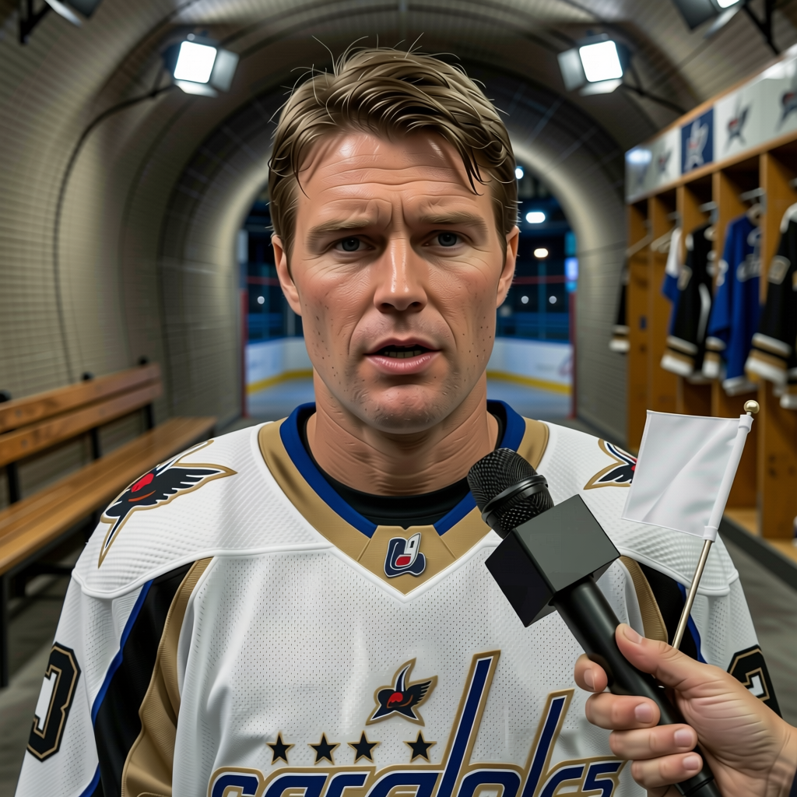

Jagr: 'We are young team, I am the old one'
After a 5-4 overtime win at Pittsburgh, the Capitals' 32-year-old captain pushed back on the idea that his is a locker room of past-their-prime veterans and said he wants to be in Washington for the rest of his contract.
 Jan KowalczykRinkside reporter and studio host · The Tunnel
Jan KowalczykRinkside reporter and studio host · The Tunnel
2:12 · synthetic voices, produced from the record · download
 Jaromir Jagr89 scored no points in the stretch since the last edition, but his
Jaromir Jagr89 scored no points in the stretch since the last edition, but his  Washington Capitals won five-four in overtime at
Washington Capitals won five-four in overtime at  Pittsburgh Penguins on 2004-12-03, their fourth straight. He carries 55 points through 26 games at 22.7 minutes a night on a contract that runs six more years at $11.20M. He is the captain.
Pittsburgh Penguins on 2004-12-03, their fourth straight. He carries 55 points through 26 games at 22.7 minutes a night on a contract that runs six more years at $11.20M. He is the captain.
Transcript
Jaromir, Jenna Kowalczyk with The Tunnel. Five-four on the road in Pittsburgh, an overtime win. What was it like from out there tonight?
Yeah, it was hard game. You know, they play good, Pittsburgh, at their building. But we fight for it in overtime, you know. Good feeling.
Four straight wins now. Does that stretch feel different from the ones earlier in the year?
Well, every game is different. But yes, I think the team is finding... how you say... the rhythm. We play more together now. Not just one line, everybody. That is the difference.
You've got 55 points through 26 games. 22 and a half a night. You're 32. Where does the energy come from?
You know, I don't think about the age. I think about the game. The legs are good, the feeling is good. And you play easy when we win, you know? When we lose, it is hard to skate. Tonight everybody feel good.
There's a reputation that follows this room. Big contracts, veterans, a team that peaked. But the average age in your locker room is 27.7. Nine guys 24 or under. Sutherby, Harding, Lopatin. Do you get tired of that assumption?
Yes. Yes, I get tired. People look at the name Jagr, the name Bondra, and they think... old team. But look at the room. Nine guys 24 or younger. Zubrus, Grier, young guys everywhere. I am the old one, you know? I am thirty-two. I just try to help the young ones, you know? That is the job now.
The contract runs six more years. $11.2 million a season. You could spend your whole career in Washington. Is that the plan?
Yeah. I want to be here, yes. The fans are good, the management is good, you know. And we are building something. The young guys, they are getting better every year. I am here to play hockey and help them, and to win. The contract is just... you know, paper.
Last one. Five-four overtime, on the road. Do you go to sleep thinking about it, or do you turn it off?
You go to sleep thinking about hockey. That is the job. You watch the video, you think what we do better next time. But tonight, I think we just go, relax, watch the game on TV. That is the life, you know.
Jaromir Jagr, thank you. Back to you.